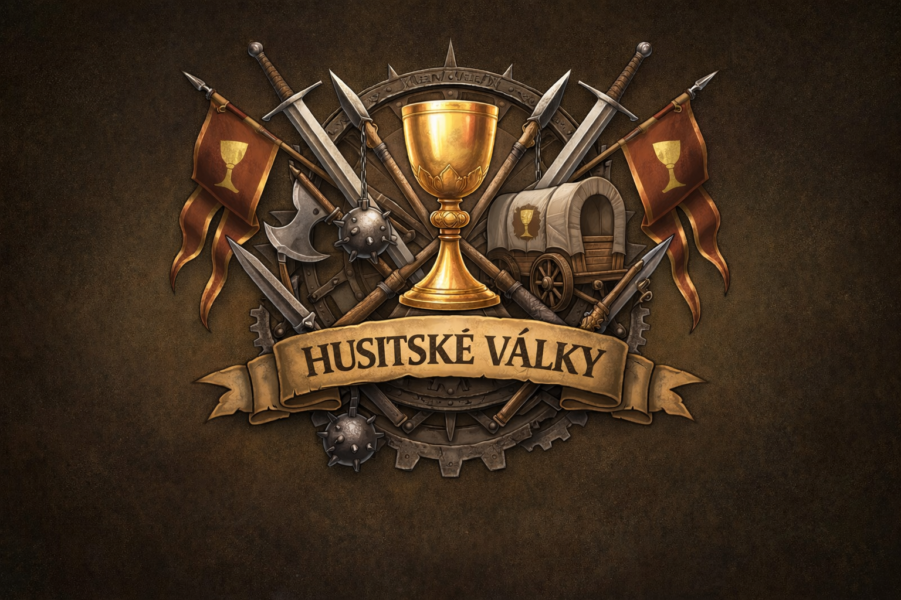

Alpha 0.1 | 03.02.2026
☕

1419-1437
První léta revoluce. Od defenestrace k obraně Prahy.
Husitské války vznikly jako reakce na upálení mistra Jana Husa na kostnickém koncilu roku 1415. Hus kritizoval prodej odpustků, bohatství církve a požadoval reformy. Jeho smrt vyvolala v Čechách vlnu odporu proti katolické církvi a římskému králi Zikmundovi Lucemburskému.
Husité formulovali své požadavky ve čtyřech artikulech: svobodné kázání slova božího, přijímání pod obojí způsobou (kalich), zákaz světského panování kněží a trestání smrtelných hříchů. Kalich se stal symbolem husitského hnutí.
Proti husitům bylo vyhlášeno celkem pět křížových výprav (1420, 1421, 1422, 1427, 1431). Všechny skončily porážkou křižáků. Husité pod vedením Jana Žižky a později Prokopa Holého vyvinuli revoluční vojenskou taktiku založenou na vozové hradbě a palných zbraních.
Husitské hnutí se postupně rozštěpilo na umírněné (kališníky) a radikály (tábority, sirotky). Roku 1434 v bitvě u Lipan porazili umírnění radikály. Války skončily roku 1436 basilejskými kompaktáty, která uznala přijímání pod obojí.
asi 1360 - 1424
Geniální vojevůdce, který nikdy neprohrál bitvu. Pocházel z drobné šlechty, bojoval jako žoldnéř v Polsku, podle pozdější tradice snad i ve službách anglického krále. Po oslepnutí (nejprve na jedno, později na obě oči) vedl husitská vojska jen podle hlášení pobočníků. Vytvořil vozovou hradbu - revoluční taktiku, která změnila způsob válčení v Evropě.
asi 1380 - 1434
Kněz a vojevůdce, vůdce táborských husitů po Žižkově smrti. Vedl spanilé jízdy do okolních zemí a porazil další křížové výpravy. Padl v bitvě u Lipan, kde se husité obrátili proti sobě.
asi 1400 - 1437
Poslední husitský hejtman, věrný Žižkův pobočník. Po Lipanech odmítl přijmout kompaktáta a bránil hrad Sion. Po jeho dobytí byl s 52 druhy popraven v Praze - poslední oběť husitských válek.
? - 1422
Radikální pražský kazatel a demagog. Vedl průvod k Novoměstské radnici, kde došlo k první pražské defenestraci. Stal se vůdcem pražské chudiny, ale nebyl voják. Popraven roku 1422 na Staroměstské radnici.
asi 1395 - 1454
Mladý husitský hejtman z mocného rodu Lichtenburků. Vedl husitské vojsko k vítězství u Vyšehradu roku 1420. Později přešel k umírněným a bojoval u Lipan proti táborům.
? - 1438
Hejtman orebských husitů a věrný Žižkův spolubojovník. Bojoval v mnoha bitvách včetně Hořic roku 1423. Po Žižkově smrti se orebité přejmenovali na sirotky na jeho počest.
? - 1426
Moravský šlechtic a spojenec orebitů. Strýc Jiřího z Poděbrad, budoucího českého krále - Jiříkovým otcem byl Hynkův bratr Viktorin Boček z Kunštátu. U Malešova roku 1424 padl do zajetí.
1368 - 1437
Římský a uherský král, později císař Svaté říše římské. Syn Karla IV., odpovědný za upálení Jana Husa. Organizoval pět křížových výprav proti husitům. Nakonec byl roku 1436 přijat za českého krále po přijetí kompaktát.
1398 - 1444
Papežský legát, který vedl pátou křížovou výpravu roku 1431. U Domažlic jeho vojsko uprchlo, aniž by spatřilo nepřítele - stačil zvuk husitského chorálu. Ztratil při útěku kardinálský klobouk.
1370 - 1428
Míšeňský markrabě a od roku 1423 saský kurfiřt. Roku 1426 jeho vojsko podniklo velkou křížovou výpravu, která skončila katastrofální porážkou u Ústí nad Labem - jednou z největších porážek křižáků.
1369 - 1426
Florentský obchodník a kondotiér ve službách krále Zikmunda. Stal se jedním z jeho nejschopnějších vojevůdců. Vedl uherské vojsko při tažení do Čech, ale proti vozové hradbě jeho jízdní taktika selhávala.
? - 1425
Jihočeský katolický šlechtic a hejtman královského landfrýdu. Vedl 2000 jezdců proti 400 husitům u Sudoměře, kde utrpěl zdrcující porážku. Roku 1421 ho husité zajali na hradě Krasíkově - poté přestoupil ke kališnictví a padl roku 1425 jako táborský hejtman při obléhání Retzu.
asi 1380 - 1425
Nejvyšší purkrabí pražský. Zpočátku sympatizoval s husity a pomohl jim obsadit Pražský hrad, ale po radikalizaci hnutí přešel ke katolíkům. U Hořic roku 1423 utrpěl porážku od Žižky.
Revoluční taktika, která změnila válečnictví. Těžké selské vozy byly upraveny pro boj - okované, s dřevěnými štíty, střílnami a háky na spojování. V bitvě vytvořily mobilní pevnost, ze které střelci decimovali útočící jízdu. Vozy se daly rychle spojit do kruhu nebo čtverce.
Husité byli průkopníky v masovém použití palných zbraní v polních bitvách. Hákovnice, píšťaly, houfnice a tarasnice dávaly jejich vojsku devastující palebnou sílu. Hluk a kouř také děsil koně nepřátelské jízdy.
Husitské vojsko kombinovalo různé typy jednotek: střelci za vozy vedli palbu, cepníci a sudličníci bránili mezery mezi vozy, jízda prováděla výpady a pronásledovala prchající nepřátele.
Žižka mistrně využíval terén. U Sudoměře postavil vozy na hrázi mezi rybníky, u Vítkova bránil strmý kopec. Husité vždy hledali výhodnou pozici a nutili nepřítele útočit do kopce nebo přes překážky.
Husitský chorál "Ktož jsú boží bojovníci" byl zpíván před bitvou a během pochodu. Jeho zvuk děsil nepřátele natolik, že u Domažlic křižácké vojsko uprchlo, aniž by spatřilo jediného husitu.
Základní terén bez bonusů. Snadný pohyb.
+2 obrana. Zpomaluje pohyb.
+3 obrana. Zpomaluje pohyb.
Neprůchodná. Tvoří přirozené překážky.
+4 obrana. Strategická pozice.
Rychlejší pohyb. Bez obranných bonusů.
+2 obrana. Úzký průchod mezi rybníky.
Zpomaluje pohyb. Obtížný terén pro jízdu.
+1 obrana při obraně. Bonus pro útočníka shora.
Každá jednotka může v jednom tahu provést pohyb a útok (nebo pouze jedno z toho). Po dokončení akcí klikněte na "Ukončit tah".
Poškození = Útok jednotky - Obrana cíle. Minimální poškození je 5. Terén přidává bonus k obraně.
Zničte všechny nepřátelské jednotky nebo dosáhněte cíle mise.
Jednorázová schopnost aktivovaná tlačítkem. Poskytuje všem husitským jednotkám +50% útok, ale -20% obrana na 2 kola. Použijte ve správný okamžik pro rozhodující útok!
Jednotky vedle vozové hradby nebo v městě se na konci tahu léčí o +10 HP. Maximálně do 50% původního zdraví. Každá jednotka může regenerovat pouze jednou za bitvu.
Vidíte pouze oblast kolem svých jednotek. Neprozkoumané oblasti jsou tmavé, prozkoumané ale neviditelné jsou šedé.
Terénní modifikátory:
Lehký jezdec specializovaný na průzkum bojiště.
Omezení: Slabý v boji (-50% útoku proti pěchotě v obranné pozici), max 2 zvědi na bitvu.
Když armáda utrpí kritické ztráty, její morálka se zhroutí a jednotky začnou prchat z bojiště.
Verze: Alpha 0.1 (3. února 2026)
Historická tahová strategická hra zasazená do období husitských válek (1419-1437).
Design & Development: Josef Šlerka
Historical Research: Odborná literatura o husitských válkách
Beta Testing: TBD
MIT License - Open source projekt. Můžete hru volně používat, modifikovat a distribuovat za podmínek MIT licence.
Copyright © 2026 Josef Šlerka
Vanilla JavaScript (ES6+), HTML5 Canvas, CSS3 - žádné závislosti
Text tutoriálu...
Opravdu chcete provést tuto akci?
Verze: Alpha 0.1 (3. února 2026)
Historická tahová strategická hra zasazená do období husitských válek (1419-1437).
Design & Development: Josef Šlerka
Historical Research: Odborná literatura o husitských válkách
Beta Testing: TBD
MIT License - Open source projekt. Můžete hru volně používat, modifikovat a distribuovat za podmínek MIT licence.
Copyright © 2026 Josef Šlerka
Vanilla JavaScript (ES6+), HTML5 Canvas, CSS3 - žádné závislosti